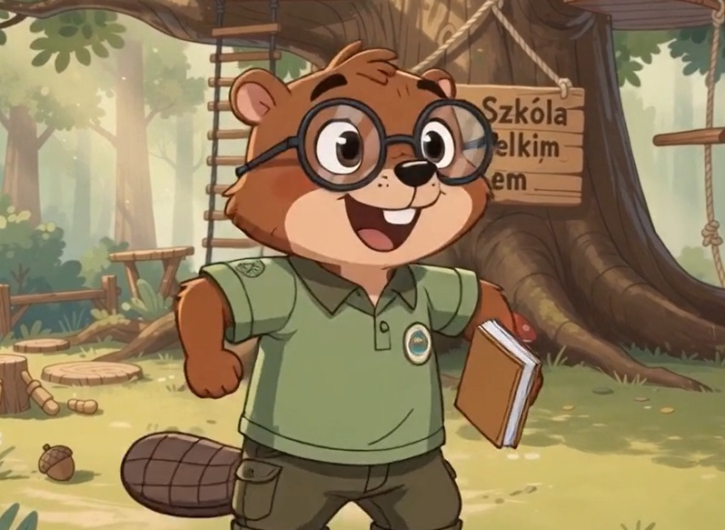
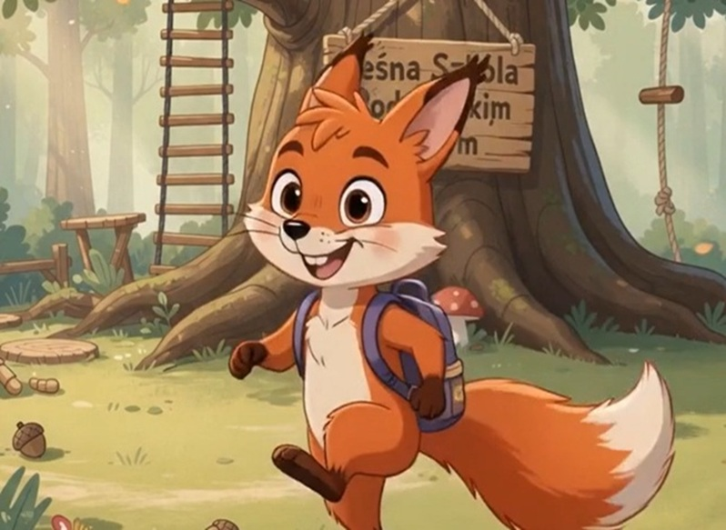
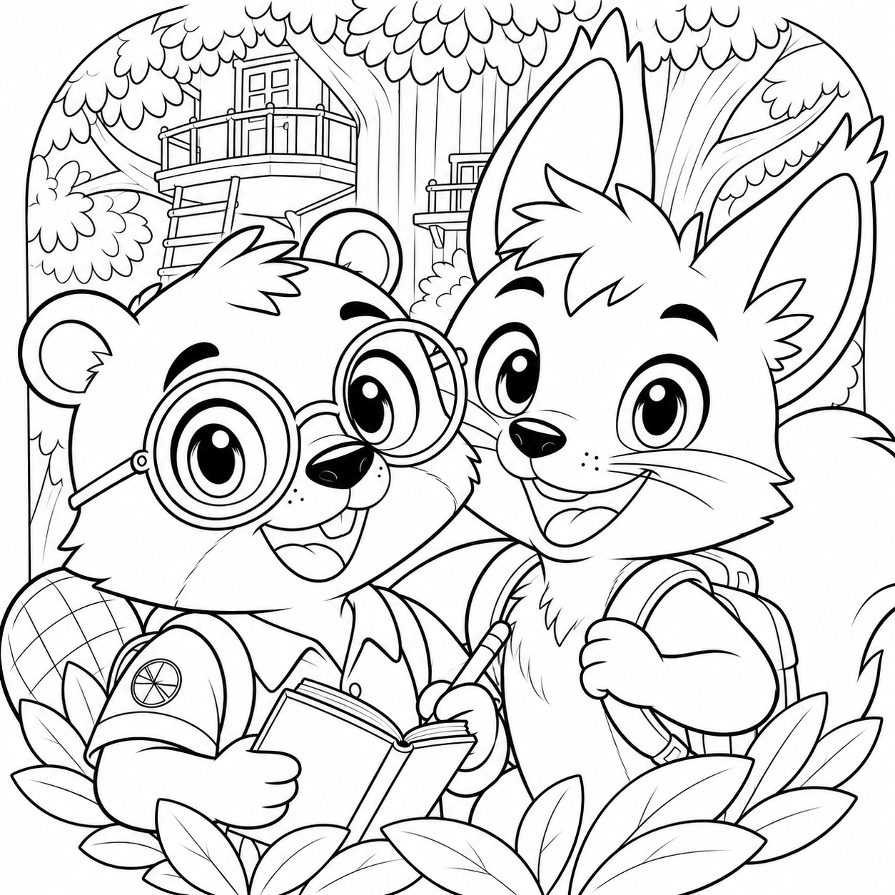
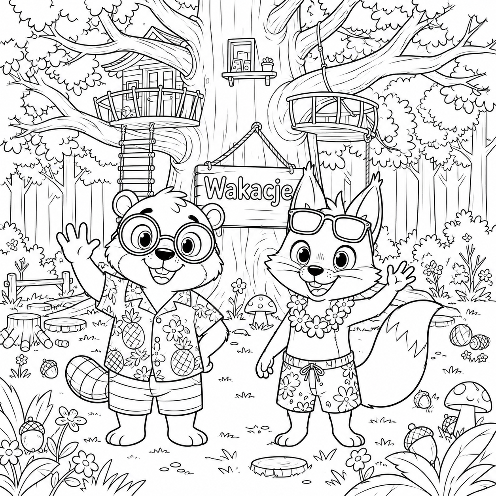

Bruno i Fela dostępne na Spotify i YouTube
Słuchaj i oglądaj Bruno i Fela na ulubionej platformie.
Strona dla rodziców i opiekunów, którzy chcą szybko znaleźć wszystkie słuchowiska i piosenki z kanału YouTube Bruno i Fela. Tu zebraliśmy najważniejsze materiały w jednym miejscu.
Witaj w Sezonie 1 naszego słuchowiska dla dzieci! 🌟 Poznaj bohaterów, przeżyj niezwykłe przygody i odkrywaj świat pełen wyobraźni. Każdy odcinek to nowa historia, która bawi, uczy i rozwija dziecięcą kreatywność. Miłego słuchania!
Bajka dla dzieci w wieku 6-8 lat. Idealna na dobranoc, podróż samochodem lub wspólne słuchanie z rodzicami.
Wszystkie odcinki sezonu 1 w jednym miejscu, gotowe do odtworzenia po kolei. Dzięki temu dziecko może wracać do ulubionych przygód Bruno i Feli kiedy tylko chce.
Od Pierwszego Dnia aż do Wielkiego Pikniku Leśnej Szkoły
Sezon prowadzi dzieci przez przyjaźń, współpracę, odwagę i odkrywanie własnych talentów. Każdy odcinek porusza inny temat i daje pretekst do rozmowy z dzieckiem po wysłuchaniu historii.
Intro: Witaj w Lesie Szumiących Liści
Witaj w magicznym Lesie Szumiących Liści - miejscu, gdzie każdy dzień przynosi nową przygodę. Poznaj Bruna, mądrego bobra, który uwielbia rozwiązywać zagadki i wszystko dokładnie planować. I Felę - odważną, pełną energii wiewiórkę, która zawsze pierwsza rusza na spotkanie przygód.
Pierwszy dzień w Leśnej Szkole
Bruno i Fela rozpoczynają naukę w Leśnej Szkole pod Wielkim Dębem. W pierwszym odcinku poznają nowych przyjaciół, nauczycielkę Panią Sowę i przekonują się, że pierwszy dzień szkoły wcale nie musi być straszny.
Wielki Wyścig do Dzwonka
Fela jest przekonana, że jest najszybszą wiewiórką w całym Lesie Szumiących Liści. Kiedy w Leśnej Szkole zostaje ogłoszony Wielki Wyścig do Dzwonka, postanawia wszystkim to udowodnić. Czy pewność siebie wystarczy do zwycięstwa?
Zabawna i ciepła bajka dla dzieci o przyjaźni, pokorze i wierze we własne możliwości.
Domek dla Jeżyka Julka
W Leśnej Szkole uczniowie otrzymują wyjątkowe zadanie - mają zbudować domek dla Jeżyka Julka. Bruno chce wszystko dokładnie zaplanować, a Fela woli od razu działać. Czy uda im się współpracować i stworzyć najlepszy domek w całym lesie?
Pierwsza klasówka z szyszek
W Leśnej Szkole zbliża się pierwsza wielka klasówka z rozpoznawania szyszek. Bruno jest spokojny - od dawna zna wszystkie gatunki drzew. Fela natomiast odkrywa, że im bardziej próbuje wszystko zapamiętać, tym bardziej wszystko jej się miesza.
Na szczęście prawdziwy przyjaciel wie, że najlepsza nauka to taka, która sprawia radość. Ciepła, pełna humoru opowieść o tym, że proszenie o pomoc nie jest oznaką słabości, a wspólna nauka potrafi zamienić największy stres w świetną zabawę.
Nocowanie pod Wielkim Dębem
W Leśnej Szkole nadchodzi najbardziej wyczekiwany wieczór w całym semestrze - wspólne nocowanie pod Wielkim Dębem. W ciągu dnia wszyscy są odważni i podekscytowani, ale gdy zapada zmrok, las zaczyna wydawać zupełnie inne dźwięki.
Czy Fela i Bruno odkryją, że strach czasem podpowiada nam rzeczy, których wcale nie ma? Ciepła i zabawna opowieść o tym, że odwaga nie oznacza braku strachu, lecz działanie mimo niego.
Największy Skoczek Leśnej Szkoły
Po nocnym deszczu na leśnej ścieżce pojawia się ogromna kałuża. Niektórzy twierdzą, że nie da się jej przeskoczyć. To wystarczy, żeby wszyscy zaczęli wymyślać coraz zabawniejsze sposoby na zdobycie tytułu „Największego Skoczka Leśnej Szkoły”.
Bruno przygotowuje dokładny plan, a Fela jest przekonana, że wystarczy dobry rozpęd. Czy naprawdę warto ryzykować tylko po to, żeby zaimponować innym?
Dzień Zamiany Talentów
W Leśnej Szkole nauczyciel ogłasza wyjątkowe wyzwanie - przez cały dzień każdy ma spróbować zachowywać się jak ktoś zupełnie inny. Bruno postanawia być spontaniczny jak Fela, a Fela chce być uporządkowana jak Bruno.
Szybko okazuje się, że bycie kimś innym wcale nie jest takie proste. Pełna humoru opowieść o tym, że każdy ma własne talenty, a prawdziwa przyjaźń polega na docenianiu różnic.
Zaginiona mapa wyprawy
W Leśnej Szkole przygotowania do Wielkiej Wyprawy zostają niespodziewanie przerwane. Znika jedyna mapa prowadząca do Leśnej Polany Odkrywców. Fela jest przekonana, że znajdzie ją w kilka minut, a Bruno chce dokładnie przeanalizować wszystkie tropy.
Dopiero gdy połączą swoje siły, odkryją, że najlepszy detektyw to nie ten, który wszystko robi sam, ale ten, który potrafi współpracować.
Wielki Mecz Lasu
W Leśnej Szkole wszyscy czekają na coroczny Wielki Mecz Lasu. Fela marzy o strzeleniu zwycięskiego gola, a Bruno przygotowuje dokładną taktykę. Jednak kiedy mecz się rozpoczyna, szybko okazuje się, że samo zdobywanie bramek nie wystarczy.
Największym sukcesem jest współpraca całej drużyny i dobra zabawa.
Wielki Piknik Leśnej Szkoły
Nadszedł dzień Wielkiego Pikniku Leśnej Szkoły - najbardziej wyczekiwanego wydarzenia całego roku. Na leśnej polanie spotykają się wszyscy uczniowie, rodziny i przyjaciele. Bruno i Fela pomagają przygotować piknik, wspominając wszystkie przygody, które przeżyli od pierwszego dnia szkoły.
Kiedy niespodziewanie nad polanę nadciąga silny wiatr, okazuje się, że dzięki przyjaźni i współpracy nawet największe zamieszanie może zakończyć się wspaniałą zabawą.
Witaj w Sezonie 2 naszego słuchowiska dla dzieci. Przed Bruno i Felą nowe wakacyjne przygody, więcej tajemnic i jeszcze więcej okazji do wspólnego odkrywania świata. Każdy odcinek to nowa historia, która bawi, uczy i rozwija dziecięcą wyobraźnię. Miłego słuchania.
Najnowsze odcinki sezonu 2 zebrane w jednym miejscu. Idealne do słuchania po kolei albo wybierania ulubionych historii.
Wakacyjny start i pierwsze wielkie odkrycia
Sezon 2 przenosi bohaterów poza szkolne mury i zaprasza dzieci do świata zagadek, map, wypraw i codziennych małych odkryć. Każda historia wzmacnia ciekawość, wytrwałość i radość ze wspólnego działania.
Wakacje się zaczynają
Rozpoczynają się wakacje w Lesie Szumiących Liści. Bruno i Fela żegnają Leśną Szkołę i tworzą swoją Listę Wakacyjnych Przygód. Czy uda im się przeżyć najlepsze lato w życiu?
Pełna humoru i ciepła opowieść o przyjaźni, marzeniach i pierwszych wakacyjnych przygodach.
Tajemnicza Mapa Odkrywców
Bruno i Fela odnajdują stary, tajemniczy fragment mapy z zagadkową wskazówką. Wyruszają na pierwszą wakacyjną wyprawę, nie wiedząc jeszcze, że to dopiero początek największej przygody w Lesie Szumiących Liści.
Zabawna i pełna tajemnic bajka o ciekawości, wytrwałości i odkrywaniu świata.
Wodospad Siedmiu Kropel
Bruno i Fela podążają za kolejną wskazówką tajemniczej mapy, która prowadzi ich do niezwykłego Wodospadu Siedmiu Kropel. Czy uda im się odnaleźć ukrytą wiadomość? A może tym razem największym wyzwaniem okaże się... cierpliwość?
Pełna humoru i przygód bajka dla dzieci o uważności, wytrwałości i odkrywaniu niezwykłych tajemnic Lasu Szumiących Liści.
Wielka Wyprawa Tratwą
Bruno i Fela budują własną tratwę i wyruszają w niezwykły rejs po leśnym strumyku. Gdy ich wyprawa niespodziewanie się zatrzymuje, odkrywają tajemniczą buteleczkę z kolejną wskazówką prowadzącą do sekretu starej mapy.
Pełna humoru i przygód bajka dla dzieci o odwadze, współpracy i przekonaniu, że nawet nieoczekiwane przeszkody mogą prowadzić do czegoś dobrego.
Dzień Bez Słów
Bruno i Fela podejmują niezwykłe wyzwanie - próbują porozumiewać się bez wypowiadania ani jednego słowa. Czy uda im się rozwiązać kolejną zagadkę tajemniczej mapy, wykorzystując tylko gesty, uważność i współpracę?
Pełna humoru i ciepła bajka dla dzieci o przyjaźni, komunikacji i przekonaniu, że czasem można powiedzieć najwięcej... nie mówiąc nic.
Leśny Piknik
Bruno i Fela organizują wielki piknik dla swoich przyjaciół z Lasu Szumiących Liści. Gdy tajemniczo znika koszyk z kanapkami, bohaterowie odkrywają, że czasem dzielenie się z innymi przynosi najpiękniejsze niespodzianki... i kolejną wskazówkę do sekretnej mapy.
Pełna humoru i ciepła bajka dla dzieci o życzliwości, dzieleniu się i odkrywaniu, że dobro zawsze wraca.
Stary Wiatrak
Bruno i Fela podążają za kolejną wskazówką tajemniczej mapy i trafiają do starego wiatraka skrywającego niezwykły sekret. Podczas wyprawy przekonują się, że pomaganie innym może otworzyć drzwi do kolejnej wielkiej przygody.
Pełna humoru i tajemnic bajka dla dzieci o życzliwości, odwadze i odkrywaniu niezwykłych miejsc w Lesie Szumiących Liści.
Jaskinia Echo
Bruno i Fela podążają za kolejną wskazówką tajemniczej mapy i trafiają do niezwykłej Jaskini Echo. W jej ciemnych zakamarkach czeka na nich kolejny fragment mapy oraz zagadka, która zmusi ich do uważnego słuchania.
Pełna tajemnic i humoru bajka dla dzieci o odwadze, uważności i odkrywaniu, że coś, co początkowo wydaje się straszne, może skrywać coś pięknego.
Klub Odkrywców
Wakacje powoli dobiegają końca, ale przed Brunem i Felą jeszcze jedna wielka przygoda. Po połączeniu wszystkich fragmentów tajemniczej mapy bohaterowie odkrywają miejsce ukryte na jej końcu. Postanawiają również założyć własny Klub Odkrywców Lasu Szumiących Liści.
Ciepła i zabawna bajka o przyjaźni, współpracy, pomaganiu innym i wspólnym odkrywaniu świata.
Największy Skarb Wakacji
Bruno, Fela i przyjaciele docierają do miejsca wskazanego na tajemniczej mapie. W ukrytej skrzyni znajdują coś zupełnie innego, niż się spodziewali. Czy prawdziwy skarb musi być ze złota?
Wzruszające i pełne humoru zakończenie drugiego sezonu o przyjaźni, wspólnych wspomnieniach i odkrywaniu, że najcenniejsze skarby często mamy tuż obok siebie.
Interaktywna mapa pokazująca, gdzie dzieje się akcja w kolejnych odcinkach. Kliknij punkt na mapie albo wybierz odcinek, aby zobaczyć najważniejsze wydarzenia z danego miejsca.
Interaktywna mapa nowego sezonu prowadzi przez wakacyjne wyprawy Bruna i Feli. Kliknij punkt mapy albo wybierz odcinek, aby zobaczyć najważniejsze wydarzenia i miejsca przygód.
Wesołe piosenki do wspólnego śpiewania, tańczenia i zabawy. Idealne na poranki, drogę do przedszkola i rodzinne popołudnia.
Zbiór utworów muzycznych dostępnych na YouTube. Wygodny dostęp do wszystkich piosenek z kanału Bruno i Fela.
Zachęcamy, aby po wysłuchaniu odcinka lub piosenki porozmawiać z dzieckiem o emocjach, przyjaźni i odkrywaniu świata. To dobry sposób na wspólne, wartościowe chwile.
Bruno i Fela
Poznajcie Bruno i Fele! Wesoła, ciepła, dziecięca piosenka o przygodach przyjaciół w Lesie Szumiących Liści.
Słuchaj na YouTubeBruno i listy
Bruno i jego listy. Wesoła piosenka o Brunie - młodym bobrze, który kocha książki, listy, porządek i dobre pomysły.
Słuchaj na YouTubeFela na gałązce
Poznajcie Fele! Piosenka o odważnej wiewiórce, która szybko biega, wysoko skacze i zawsze jest gotowa na nową przygodę.
Słuchaj na YouTubeLas Szumiących Liści
Spokojna, magiczna piosenka opisująca Las Szumiących Liści. Niech dzieci wyobrażą sobie szumiące drzewa, śpiewające ptaki, strumień, kolorowe liście, leśne zwierzęta i Wielki Dąb, w którym mieści się szkoła.
Słuchaj na YouTubeDębowa szkoła
Radosna piosenka o szkole ukrytej w ogromnym dębie. Nauka przez zabawę, przyjaciele, wspólne odkrywanie świata, śmiech i codzienne przygody - tak właśnie powinna kojarzyć się nam ta piosenka.
Słuchaj na YouTubePlan i skok
Ciepła piosenka o przyjaźni Bruna i Feli. Bruno lubi planować, Fela działa spontanicznie, ale razem tworzą świetny zespół!
Słuchaj na YouTubeHej Przygodo!
Skoczna, pełna energii piosenka o codziennych przygodach Bruna i Feli. Poszukiwanie skarbów, budowanie domków, wyścigi, odkrywanie tajemnic lasu i pomaganie innym zwierzętom to jest to, co Bruno i Fela kochają najbardziej.
Słuchaj na YouTubeWakacje!
Wakacje! Wesoła letnia piosenka o wakacjach Bruna i Feli. Pikniki nad strumieniem, pływanie, zbieranie malin oraz wszystko, na co tylko mają ochotę!
Słuchaj na YouTubeKasztany pod dębami
Ciepła piosenka o kolorowej jesieni w Lesie Szumiących Liści.
Słuchaj na YouTubeŚpijcie już dzieci! Kołysanka
Bardzo spokojna kołysanka dla dzieci. Bruno i Fela wracają po całym dniu przygód do domu.
Słuchaj na YouTubeBruno i Fela to duet zupełnie różnych charakterów. Właśnie dzięki tym różnicom ich wspólne przygody są tak ciekawe, zabawne i pełne dobrych emocji.

Bruno to bardzo inteligentny mały bóbr, który najlepiej czuje się wtedy, gdy może wszystko spokojnie przemyśleć. Uwielbia planować kolejne kroki, szukać sprytnych rozwiązań i porządkować świat wokół siebie. Często nosi przy sobie mały notatnik, bo lubi zapisywać pomysły i ważne obserwacje. Bywa też tak, że analizuje więcej niż trzeba, ale właśnie to sprawia, że potrafi zauważyć rzeczy, które umykają innym.

Fela jest szybka, pełna energii i niemal zawsze gotowa do działania. Odważnie rusza tam, gdzie dzieje się coś ciekawego, a nowe przygody przyciągają ją jak magnes. Ma w sobie dużo spontaniczności, dlatego często działa zanim zdąży wszystko dokładnie przemyśleć. To właśnie jej żywiołowość, entuzjazm i wielkie serce sprawiają, że wnosi do każdej historii ruch, radość i odrobinę szalonej odwagi.
Pobierz i wydrukuj kolorowanki, aby dzieci mogły tworzyć własne wersje bohaterów Bruno i Fela. Każda grafika jest dostępna po kliknięciu przycisku pobierania.




Masz pytania, uwagi lub sugestie dotyczące Bruno i Fela? Napisz do nas!

{kind=link}
{kind=link}